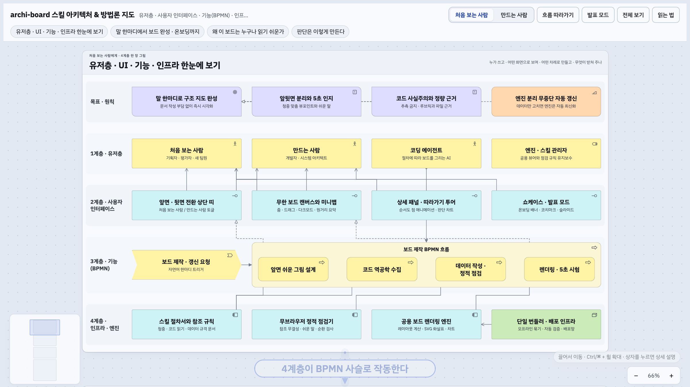

안녕하세요, 이재엽입니다. 오늘은 AI가 코드를 짜 주는 시대에 무엇을 믿고 만들어야 하는지, 그리고 시스템 설계 7단계 위에 세운 제 스킬 archi-board를 소개하겠습니다.
쓰는 사람은 늘고, 믿는 사람은 줄었다
AI 도구를 쓰거나 쓸 계획AI 답의 정확도를 믿는다
48%
2026년, 가장 많이 나온 답
“쉽게 확인할 수 있을 때 믿는다”
Stack Overflow 개발자 설문 2024 · 2025 · 2026. 같은 기간 "못 믿는다"는 31% → 46%
2 / 10
Stack Overflow 개발자 설문입니다. AI 도구를 쓰는 사람은 76%에서 84%로 늘었는데, AI 답의 정확도를 믿는 사람은 43%에서 33%로 줄었습니다. 올해 설문에서 가장 많은 48%가 고른 답은 "쉽게 확인할 수 있을 때 믿는다"였습니다. 결국 확인할 수 있어야 믿을 수 있습니다.
구글 시스템 설계 7단계
구글 같은 빅테크가 설계 면접에서 묻는 일곱 걸음
1요구사항 정리
2규모 추정
3API 정의
4데이터 모델
5큰 구조 설계
6상세 설계
7병목 점검
시스템 설계 면접에서 널리 쓰는 7단계 틀: Grokking the System Design Interview · ByteByteGo
3 / 10
그래서 무엇을 배워야 할까요. 큰 틀은 구글 같은 빅테크가 시스템을 설계할 때 밟는 일곱 단계입니다. 요구사항을 정리하고, 규모를 추정하고, API와 데이터 모델을 정하고, 큰 구조를 그린 뒤 상세 설계를 하고, 마지막에 병목을 점검합니다.
그 7단계 안에 우리 수업이 들어간다
PRD무엇을 만들까
TDD어떻게 만들고 확인할까
1요구사항 정리
2규모 추정
3API 정의
4데이터 모델
5큰 구조 설계
6상세 설계
7병목 점검
3강 요구분석 4강 유스케이스
3강 비기능 요구
5강 클래스 · 오퍼레이션
8강 데이터 설계
7강 아키텍처
6강 동적 모델 9강 UI 설계
6강 모델 검증 7강 설계 목표
교수님 자료 「UML로 배우는 시스템 분석 설계」 3~9강
4 / 10
우리 수업에서 배운 내용은 이 7단계 안에 들어갑니다. 3강 요구분석과 4강 유스케이스는 1단계, 비기능 요구는 규모 추정, 5강 클래스는 API, 8강은 데이터 모델, 7강은 큰 구조, 6강 동적 모델과 9강 UI는 상세 설계, 모델 검증은 마지막 점검입니다. 그리고 이 단계들을 밟을 때 쓰는 문서가 PRD와 TDD입니다. PRD로 무엇을 만들지 정하고, TDD로 어떻게 만들고 확인할지 정합니다.
요구사항은 계속 바뀐다
바뀔 때마다 사람이 이 그림들을 하나씩 다시 그려야 해서, 작업이 어려워진다
그림: 교수님 자료 4 · 5 · 6 · 7 · 8강, 모두 같은 "주문" 이야기
5 / 10
그런데 요구사항은 한 번 정해도 계속 바뀝니다. 교수님 자료의 그림을 모아 보면 유스케이스, 클래스, 상태, 계층, ERD가 모두 같은 "주문" 이야기입니다. 그래서 주문 취소 규칙 하나만 바뀌어도 이 다섯 그림을 전부 다시 그려야 하고, 그래서 작업이 어려워집니다. 그림들이 따로따로 그려져 있기 때문입니다.
이어 붙이면 큰 틀, ArchiMate
"책 주문" 한 줄이 네 층을 모두 지난다
ArchiMate: The Open Group 표준 표기법. 왜 · 누가 · 무엇으로 · 어디서를 층으로 잇는다 (층 이름은 쉬운 말로 줄임)
6 / 10
이 그림들을 이어 붙이면 큰 틀이 됩니다. 그 표준이 ArchiMate입니다. 동기 층에 왜, 업무 층에 누가 무엇을, 애플리케이션 층에 어떤 부품과 데이터로, 기술 층에 어디서 돌아가는지를 둡니다. 분홍 줄처럼 "책 주문" 하나가 네 층을 모두 지나가니, 한 장에 이어 두면 무엇이 같이 바뀌는지 바로 보입니다.
archi-board, 이것들을 바탕으로 만들었다
"아키텍처 보드 만들어줘" 한마디면, 코드를 읽어 보드 한 장
archi-board
ArchiMate · 층으로 잇기
PRD · TDD · 설계 문서
수업의 UML 모델 · 3~9강
구글 시스템 설계 7단계

github.com/gamercross/archi-board · Claude Code 스킬 · 오른쪽은 archi-board가 자기 저장소를 그린 보드
7 / 10
그래서 만든 것이 archi-board입니다. 맨 아래 시스템 설계 7단계, 그 위에 수업의 UML 모델, 설계 문서인 PRD와 TDD, 그리고 층으로 잇는 ArchiMate. 이것들을 바탕으로 만든 Claude Code 스킬입니다. 프로젝트 폴더에서 "아키텍처 보드 만들어줘"라고 하면 AI가 코드를 읽고 보드 한 장을 그립니다. 오른쪽은 archi-board가 자기 자신을 그린 보드입니다.
바뀌어도, 엔진이 다시 그린다
사람이 다섯 번 고칠 일을, 데이터 한 파일과 엔진이 한 번에
archi-board README "코드가 바뀌면 보드 업데이트해줘: 바뀐 칸만 다시 읽어 고친다" · ab drift: 보드를 쓴 뒤 바뀐 코드를 찾는다
8 / 10
앞에서 요구사항이 바뀌면 사람이 그림 다섯 장을 하나씩 고쳐야 한다고 했습니다. 하나라도 빠뜨리면 그림끼리 어긋나죠. archi-board에서는 다릅니다. "보드 업데이트해줘" 한마디면 AI가 바뀐 곳만 다시 읽어 board-data.js 한 파일의 그 칸만 고치고, 엔진이 유저 스토리, 객체 지도, 순서도, ArchiMate 창, 데이터 지도를 한 번에 다시 그립니다. 모든 창이 같은 한 파일에서 나오니 서로 어긋날 수가 없습니다. 바뀐 곳은 drift 도구가 먼저 찾아 줍니다. 사람은 다섯 번 고칠 일을 한 번 확인만 하면 됩니다.
7단계가 보드의 창이 된다
상자마다 근거와 코드 위치가 붙어, 바로 확인할 수 있다
1요구사항
2규모
3API
4데이터
5큰 구조
6상세
7점검
↓
↓
↓
↓
↓
↓
↓
동기 층 · 유저 스토리
판단 차트
객체 지도
데이터 지도
ArchiMate 창
유즈케이스 순서도
점검 · 위험 열지도
창 이름은 archi-board README 기준. 창끼리 이어져 있어 한 곳을 누르면 관련된 곳이 같이 열린다
9 / 10
7단계는 보드에서 각자 창이 됩니다. 요구사항은 동기 층과 유저 스토리, 규모는 판단 차트, API는 객체 지도, 데이터는 데이터 지도, 큰 구조는 ArchiMate 창, 상세 설계는 유즈케이스 순서도, 점검은 점검 스크립트와 위험 열지도입니다. 상자마다 근거와 코드 위치가 붙어 있어서, AI가 그린 것도 바로 확인할 수 있습니다.
써 보기: Claude Code에서 두 줄/plugin marketplace add gamercross/archi-board /plugin install archi-board@archi-board
감사합니다
이재엽 · AITool기반소프트웨어공학 · 2026. 11. 18
10 / 10
정리하겠습니다. AI를 쓰는 만큼 확인할 수 있어야 믿을 수 있습니다. 시스템 설계 7단계와 수업 내용으로 설계하고, 바뀌는 요구사항은 ArchiMate처럼 한 장에 이어서, archi-board로 코드에서 바로 확인합니다. 이제 실제 보드를 잠깐 보여 드리겠습니다. (보드 열기 → 처음 보는 사람 / 만드는 사람 → 흐름 따라가기) 감사합니다.